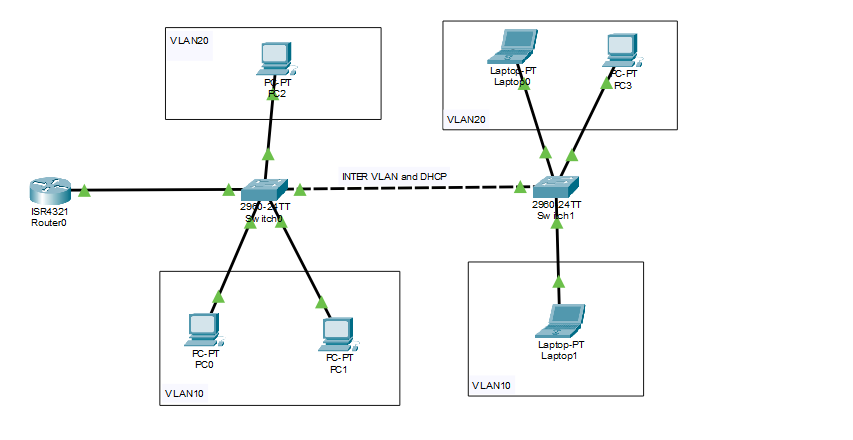
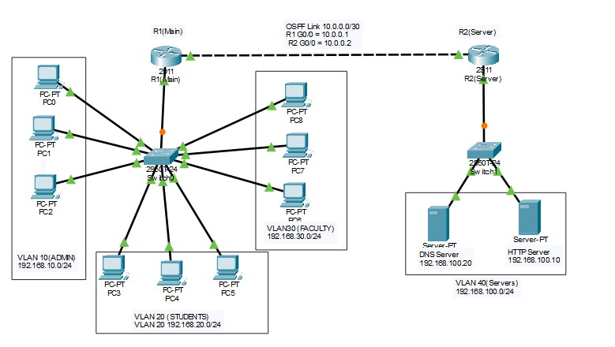
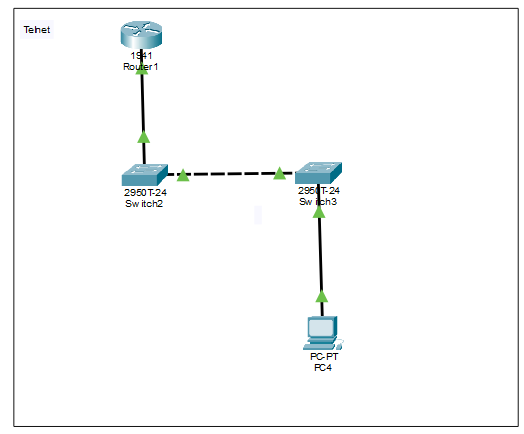

Job Portal V2
A job portal where employers can post openings and job seekers can browse and apply. The second version improves on my first build.
Cisco Packet Tracer labs and Python/Django builds, kept in the open on GitHub.
Python and Django applications I've built while learning web development.
A job portal where employers can post openings and job seekers can browse and apply. The second version improves on my first build.
A platform where people list the skills they can teach and the skills they want to learn, so they can find others to swap with.
A static portfolio built with HTML, CSS, and JavaScript to share my work and connect with people. Hosted on GitHub Pages.
Hands-on Cisco Packet Tracer labs, documented as PDFs.

Configured a router as a DHCP server with address pools, default gateway, DNS, and excluded address ranges, serving clients in VLAN 10 and VLAN 20 across two switches using inter-VLAN routing.
Clients in both VLANs received IP settings automatically, verified with
show ip dhcp binding and ipconfig.

A full campus network with a Main site and a Server site connected by OSPF: Admin, Students, Faculty, and Server VLANs (DNS and HTTP), trunk links, router-on-a-stick inter-VLAN routing, DHCP, ACLs between departments, VLSM subnetting, and NAT/PAT for internet access.
Connectivity verified using ping, traceroute, and show commands.

I'm open to entry-level network roles, collaborations, mentorship, and study groups. The fastest way to reach me is by email.
Get in Touch